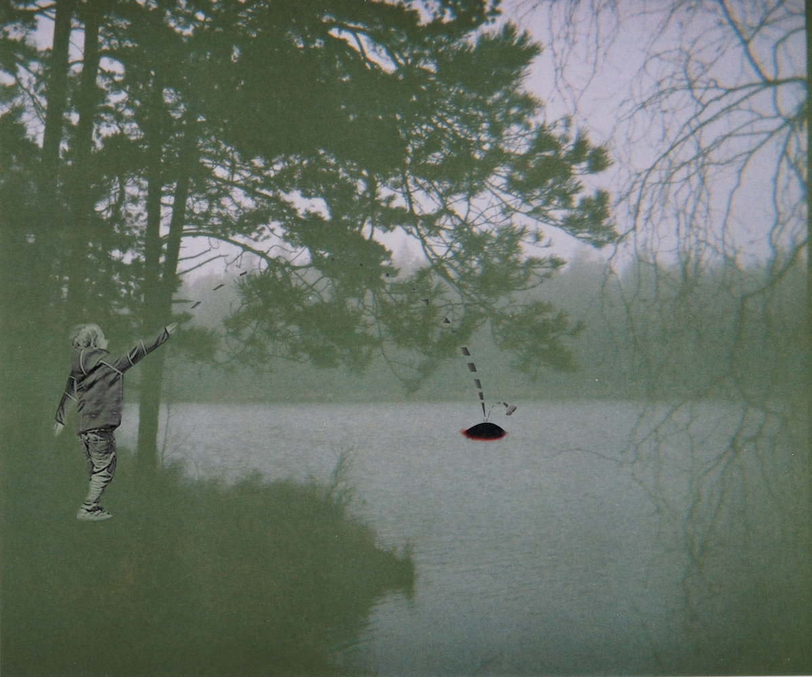

Ways Into the Design Space of Butterflies in the Stomach
How can interaction designers approach the design space of butterflies in the stomach?
Butterflies in the stomach is generally understood as a qualia of belly tingling sensation possible
of pleasure, discomfort and presence heightening. Such experiences are commonly found within
activities like rafting, roller coaster riding and paragliding. Here, experential qualities of
unpredictability and the unknown are essential aspects. These have largely been neglected as meaningful
elements of outdoor experiences in the interaction design research community. In this work, I embrace these qualities
and explore what butterflies in the stomach could mean from a designerly point of view.
I draw from my felt experiences of a shared two-day camping trip in designing three interactions.
From those are three conceptual directions drawn, articulated as ways into the design space of butterflies in the stomach.
These are detailed in the paper.
Below are descriptions of three resulting designs from the project.

Mystery
Mystery is remotely located by a hiking and camping friendly site.
In conditions of mist, cold water and darkness, occasionally a dome
surfaces a fair distance out in the lake. Its dark, alien silhouette
glitters quietly. As observers notice it, eventually they might come
to throw something at it in exploration. At impact, light suddenly
swell, and the dome submerges. They are left mystified with questions
of slight unease spelled out in their meeting gazes.
How Mystery is designed to erratically surface under certain circumstances
contributes with a rarity and ambiguity to the interaction, as well as keeping
users from swimming up to it. Its out-of-place appearance intends to tease
curiousness. The lack of a ordances are deliberately designed so that the
success to evoke the submerge and light-up will be of greater surprise and drama.
Technically speaking, a piezo microphone is placed in the waterproof dome to sense impacts.
LED‘s are placed underneath the transparent bo om to spread light,
dispersing from below. A motor with string controls vertical movement of
the air-filled dome. By wireless communication with external sensors in the
surroundings, the dome is informed of conditions.
Awe
Upon finally arriving at the outlook, the hikers find satisfaction
and peace. They bake flyers of gathered leaves and mud in a brought
mold put in a fireplace. When they are baked, they together send them off
the cliff, watching them in tickling serenity swan down far off to the fjord
to dissolve and become floating leaves.
In the way Awe is designed as
a planned and collecting activity foster anticipation that resonates with
and celebrates a typical climax of remote hikes - reaching great heights.
This setting along with the uncertain fate that the flyers are launched
into intends to directly promote anthopomorphically a tingling sensation
in the responsibility-surrendering launcher. The Awe design instance make use of a metal mold that is brought by hikers
and used to solidify leaves and mud in fly-able shapes. Solidification
occurs in a baking process when the filled mold is put in a fire for a while.
Eerie
As the hikers go to sleep in the tents, all that is heard is the
sound of the night woods: trees whispering in the wind. But, lying
in the tents, there is almost as if ambient tones quaver with the
rustle. What is that - is there something there? In eeriness, sleep
eventually comes over them; some in cozy tingling sleep, some spooked
cuddled up together.
In how Eerie drifts in and out of perception
with the wind, the recognition of its peculiar sound might come a
while after actually starting to hear it. This intends to create a
sense of unease that together with the uncanny soundscape and context
prompt particular imaginative speculations contributing to confusion and startle.
Regarding the technical details, microphones in the woods feed a subtractive
synthesizer the sound of local wind in treetops. The synthesizer
plays predetermined notes in a subtle and ambient way, broadcasting
from speakers discreetly placed in trees. A note consists of an overtone
series which is made up of varyingly open bandpass filters. This lets
selected parts of the fed sound through and thereby making musical qualities out of the wind.
Design Process
I began the design process by amassing intriguing notions to use in the design context of non-urban outdoor activities, ending up with an initial scope of mystery and ephemerality. This helped me to open up the design space particularly appreciating experiential qualities of the unknown and thrill. I participated in a two-day hike and camping trip with four people in a wet and cold landscape of dense forests and lakes. Trip experiences were documented with photographs to aid subsequent reflections. Being in-situ having a shared, felt experience of hiking and camping related activities facilitated speculations of the unknown and reminiscences about episodes of scary, mysterious and majestic experiences in the outdoors. Especially fruitful were those of scouting a lake with a flashlight at night, settling in the tent to sleep in windy conditions, and standing at an outlook of great height. Their influence is evident in the resulting three design instances. I used common design techniques of visualization, textual narratives, technical implementation detailing, and thematic analysis [1] to help define these instances. Visualization and textual narratives helped me in shaping their essences. Outlining technical implementations helped me to construct limits of the interactions and to understand the reality in which they are experienced.
Design probes [2,3] were developed to be used during the trip, as well as organized a Machine Machine workshop [4] that was conducted in-situ. I follow the tradition of Gaver et al. [2,3] where they are not for intricate and literal analysis but for inspirational purposes. These methods didn't explicitly contribute to the particular design instances I bring up. The value of these methods was in how they oriented the group towards notions of mystery and ephemerality to explore in the hiking experience.
The probes consisted of disposable cameras and paper sheets with ambiguous pictures, poems and questions. Each participant kept a disposable camera with them during the trip. The camera had inspirational prompts of what to photograph on the packaging.
There were six sheets that were available and shared among the participants during the initiation of the trip and later available around the campfire and tents. The sheets had questions stated on them accompanied by poems and surreal and abstract art, without a direct connection to the questions. This approach meant to tease out and reveal something that isn't easily recognized in one’s experience.
The Magic Machines workshop was carried out in the woods. Participants were presented a set of desires of which they addressed one each: desire of excretion, the unknown, tranquility, becoming part of nature, radical change, and to be in proximity of big forces. Situating the workshop in the woods meant to implicitly prompt ideation to the outdoor experience, although one of the desires was explicitly connected to the outdoors.
A loosely applied thematic analysis resulted in three conceptual ways into the design space of butterflies in the stomach, as detailed in the paper.
[1] Braun, V., & Clarke, V. 2006. Using thematic analysis in psychology. Qualitative research in psychology, 3(2), 77-101.
[2] Gaver, B., Dunne, T., & Pacenti, E. 1999. Design: cultural probes. interactions, 6(1), 21-29.
[3] Gaver, W., Boucher, A., Pennington, S., & Walker, B. 2004. Cultural probes and the value of uncertainty. interactions-Funology, 11(5), 53-56.
[4] Andersen, K. 2013. Making magic machines. In 10th European Academy of Design Conference.